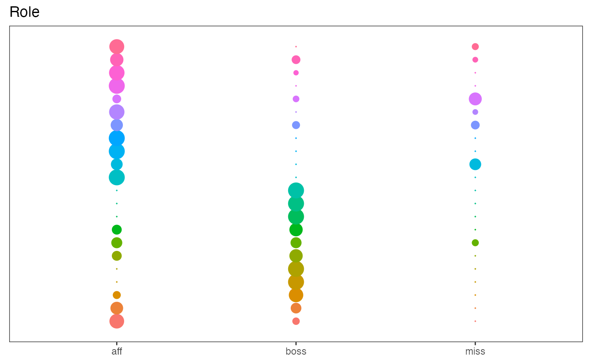

Loads packages.
library(greed)
library(dplyr)
#>
#> Attaching package: 'dplyr'
#> The following objects are masked from 'package:stats':
#>
#> filter, lag
#> The following objects are masked from 'package:base':
#>
#> intersect, setdiff, setequal, union
library(tidyr)
library(ggpubr)
#> Loading required package: ggplot2
library(mclust)
#> Package 'mclust' version 5.4.8
#> Type 'citation("mclust")' for citing this R package in publications.
library(ggplot2)
set.seed(2134)Mixed Models clustering
One of distinctive feature of greed is that you may mix several model together. Using such an approach one may perform a simultaneous clustering of several view of the same individuals with different generative models. In all case this approach suppose that the different view are generated in an independent way when the clustering assignment is known. To explore this capability we will begin with the Fifa dataset and cluster simultaneously the categorical features with an Lca and the continuous one with a Gmm.
The Fifa data-set Lca + GMM
We first load the Fifa dataset that correspond to several feature of Soccer players in the Fifa 2020 videogame. We remove the first two columns that give the players names and nationality, and we kept only the players which earn more than 3000000 euros.
data(Fifa)
X <- Fifa[,-c(1,2)] %>%
filter(value_eur>3000000) %>%
select(-value_eur,-GK,-pos_x,-pos_y)This leave us with a dataset of \(n=3345\) rows and \(p=24\) columns. The features correspond to players characteristics (age,height,weight), skills scores (pace,shooting,…) and a set of binary factors that describe the field position were the players may be aligned.
summary(X)
#> preferred_foot age height_cm weight_kg
#> Left : 846 Min. :16.00 Min. :157.0 Min. : 56.00
#> Right:2499 1st Qu.:24.00 1st Qu.:176.0 1st Qu.: 70.00
#> Median :26.00 Median :181.0 Median : 75.00
#> Mean :26.32 Mean :180.8 Mean : 75.44
#> 3rd Qu.:29.00 3rd Qu.:186.0 3rd Qu.: 80.00
#> Max. :38.00 Max. :201.0 Max. :101.00
#> pace shooting passing dribbling
#> Min. :31.00 Min. :18.00 Min. :35.00 Min. :34.00
#> 1st Qu.:65.00 1st Qu.:55.00 1st Qu.:62.00 1st Qu.:68.00
#> Median :72.00 Median :67.00 Median :68.00 Median :73.00
#> Mean :71.35 Mean :62.56 Mean :67.02 Mean :71.74
#> 3rd Qu.:79.00 3rd Qu.:72.00 3rd Qu.:73.00 3rd Qu.:77.00
#> Max. :96.00 Max. :93.00 Max. :92.00 Max. :96.00
#> defending physic RW CF ST
#> Min. :18.00 Min. :35.00 FALSE:3071 FALSE:3226 FALSE:2610
#> 1st Qu.:39.00 1st Qu.:65.00 TRUE : 274 TRUE : 119 TRUE : 735
#> Median :65.00 Median :71.00
#> Mean :57.61 Mean :70.14
#> 3rd Qu.:73.00 3rd Qu.:76.00
#> Max. :90.00 Max. :90.00
#> LW CAM CM CB CDM LM
#> FALSE:3070 FALSE:2758 FALSE:2440 FALSE:2652 FALSE:2710 FALSE:2807
#> TRUE : 275 TRUE : 587 TRUE : 905 TRUE : 693 TRUE : 635 TRUE : 538
#>
#>
#>
#>
#> LB RB RM LWB RWB
#> FALSE:3035 FALSE:3027 FALSE:2805 FALSE:3283 FALSE:3290
#> TRUE : 310 TRUE : 318 TRUE : 540 TRUE : 62 TRUE : 55
#>
#>
#>
#> Preparing the data and the model is a little bit complicated than for the other models since we must specify the different models we want to use:
library(future)
plan(multisession)
# prepare the dataset create a list with the factor colums in one slot and the numeric columns in another slot
data <- list(categorical = X %>% select_if(is.factor),
cont = X %>% select_if(function(v){!is.factor(v)}))
# create the MixedModels, as expected we will use an LcaPrior for the factors and a GmmPrior for the numeric columns.
# !be carefull names in the models list and in the data list must match
mixmod <- MixedModels(models=list(categorical=LcaPrior(),cont=GmmPrior()))
# perform the clustering
sol = greed(data,model = mixmod)
#> ------- MIXEDMODELS model fitting ------
#> ################# Generation 1: best solution with an ICL of -107151 and 9 clusters #################
#> ################# Generation 2: best solution with an ICL of -107109 and 9 clusters #################
#> ################# Generation 3: best solution with an ICL of -107081 and 8 clusters #################
#> ################# Generation 4: best solution with an ICL of -107038 and 7 clusters #################
#> ################# Generation 5: best solution with an ICL of -107036 and 7 clusters #################
#> ################# Generation 6: best solution with an ICL of -107034 and 7 clusters #################
#> ################# Generation 7: best solution with an ICL of -107033 and 7 clusters #################
#> ################# Generation 8: best solution with an ICL of -107033 and 7 clusters #################
#> ------- Final clustering -------
#> ICL clustering with a MIXEDMODELS model, 7 clusters and an icl of -107033.When the model is fitted the extractSubModel() function allow to retrieve the fitted sub-models, and use the plotting capabilities of each of them. We may for example look at the categorical part of the model and make a marginals plot. We see with this figure that the clusters found agree quite strongly with the field positions features. The preferred foot feature has also an impact on cluster 2 and 3.
plot(extractSubModel(sol,"categorical"),type="marginals")
When looking at the continuous features the clusters are quite well organized, the hierarchical ordering has produced a meaningful ordering, look at the shooting feature. We will go back to this point later.
plot(extractSubModel(sol,"cont"),type="violins")
For the marginals plots, one things that pop out is the clear bimodal aspect of the defending features, the mixture of the remaining feature is clearly not so well separated.
plot(extractSubModel(sol,"cont"),type="marginals") To clearly show, the alignment of the cluster with field position we will make a little figure and plot for each cluster their mean position on the field. This will be computed as the weighted average coordinate of each field position were the weight correspond to the probability that a cluster member can play at this position.
To clearly show, the alignment of the cluster with field position we will make a little figure and plot for each cluster their mean position on the field. This will be computed as the weighted average coordinate of each field position were the weight correspond to the probability that a cluster member can play at this position.
data("Fifa_positions")
params=coef(extractSubModel(sol,"categorical"))
pos_clust = data.frame(do.call(rbind,lapply(1:K(sol),function(k){
sapply(params$Thetak[2:length(params$Thetak)],function(x){
1-x[k,1]
})
})))
pos_clust$cluster=factor(1:K(sol))
pos_clust_long = pos_clust %>% pivot_longer(cols = -ncol(pos_clust),names_to = "position",values_to = "p") %>%
mutate(position=tolower(position)) %>%
left_join(Fifa_positions$positions,by=c("position"="team_position"))
pos_clust_mean = pos_clust_long %>% group_by(cluster) %>% summarise(x=weighted.mean(x,p),y=weighted.mean(y,p))
library(ggpubr)
ggplot(pos_clust_mean)+background_image(Fifa_positions$bg_img)+geom_text(aes(x=x,y=y,label=cluster),size=5,col="red")+
coord_fixed(ratio=1)+
scale_x_continuous(limits=c(0,203.2),expand = c(0,1))+
scale_y_continuous(limits=c(0,101.6),expand = c(0,1))+theme_void()
The organisation of the clusters clearly appears, cluster 1 correspond to central defensive players, cluster 2 and 3 to lateral defensive players (recall that the preferred foot of this player were quite different between this two clusters with almost only right footed players in cluster 2 and left footed players in cluster 3).
The Ndrangheta data-set Sbm + Lca
Mixed models may also be used to analyse graph datasets with node attribute for example. To demonstrate this feature we will use the Ndrangeta dataset. This dataset contains relationship information between members of the Ndrangheta mafia together with some information on their group affiliation and their role. We wil use an Sbm model to fit the adjacency matrix and an Lca model for the facotr describing the roles.
# laod the dataset
data(Ndrangheta)
# prepare the data
data= list(graph=Ndrangheta$X,node_infos=data.frame(Role=Ndrangheta$node_meta$Role,stringsAsFactors = TRUE))
# build the mixed model
mixmod = MixedModels(models= list(graph=SbmPrior(),node_infos=LcaPrior()))
# cluster
sol=greed(data,model=mixmod)
#> ------- MIXEDMODELS model fitting ------
#> ################# Generation 1: best solution with an ICL of -2582 and 16 clusters #################
#> ################# Generation 2: best solution with an ICL of -2412 and 22 clusters #################
#> ################# Generation 3: best solution with an ICL of -2398 and 23 clusters #################
#> ################# Generation 4: best solution with an ICL of -2398 and 23 clusters #################
#> ------- Final clustering -------
#> ICL clustering with a MIXEDMODELS model, 22 clusters and an icl of -2367.
# analyse the results
plot(sol)
plot(extractSubModel(sol,"graph"),type="blocks")
plot(extractSubModel(sol,"node_infos"),type="marginals")